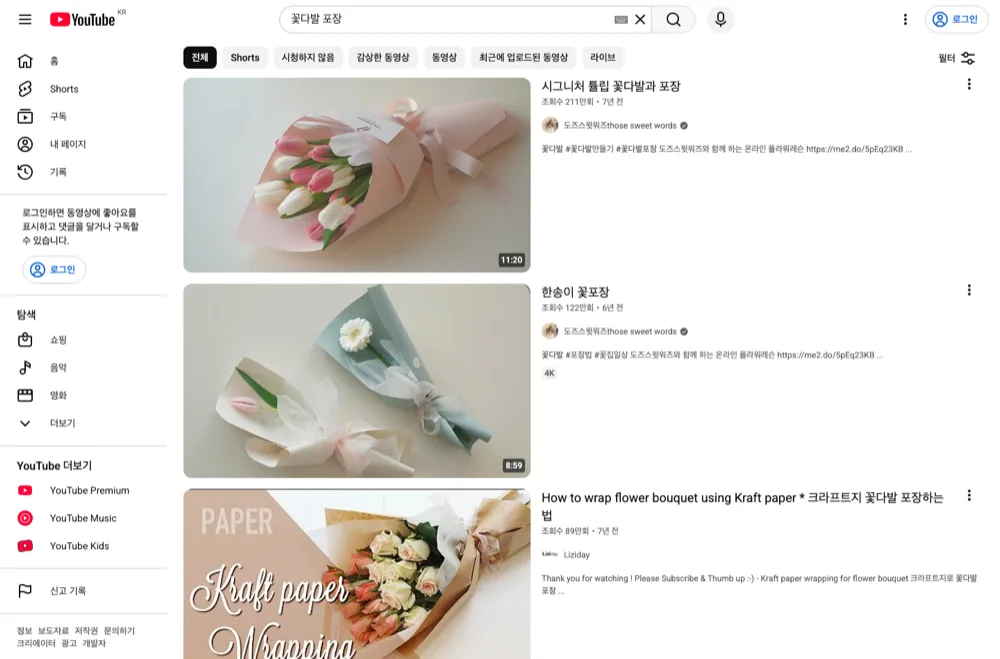
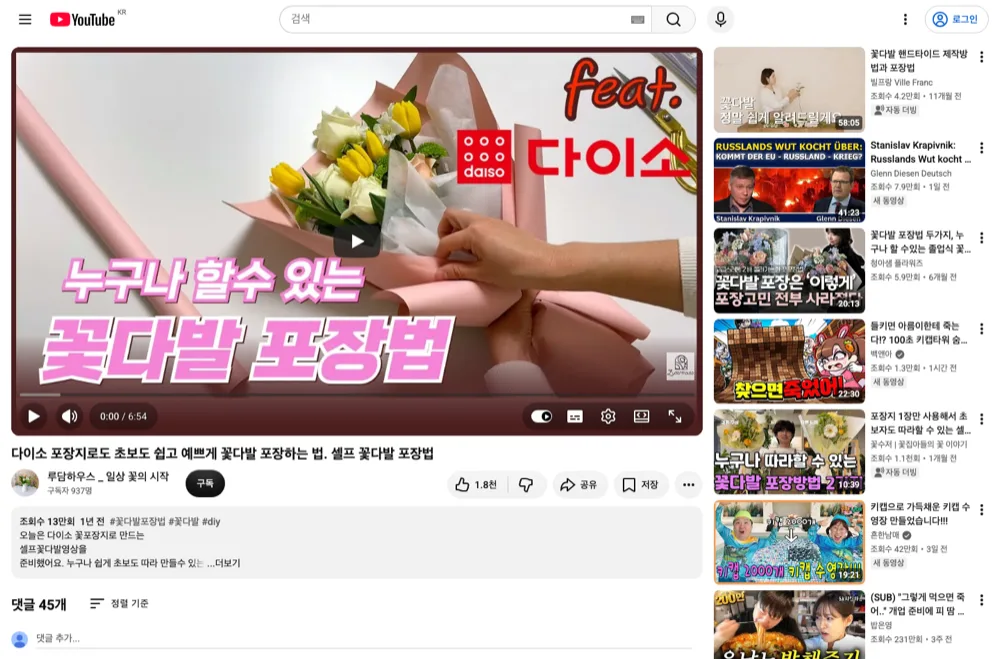
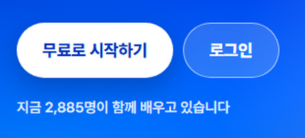

영상 하나 올리는데
아직도 혼자 다 하세요
유튜브 1만
내 사업과 고객을 알려주고
기획 · 제목 · 썸네일 · 대본을
하나씩 만들어 갑니다
지시서가
이 한 장이 되기까지

‘5천원 vs 꽃집’이라는 비교를
큰 글씨와 두 꽃다발로 보여줍니다
라운지 가이드 3장에 실린 이미지 생성 결과
AI에게 대본을 시켰는데
왜 내 얘기는
하나도 없을까요
유튜브 대본 하나 써줘
내 고객의 질문
내가 겪은 이야기
AI가 재료를 알면
내가 말할 대본을 함께 만들 수 있습니다
매번 설명하지 말고
비서부터 만드세요
내 사업과 고객, 지킬 규칙을
한 번에 정리하는 것부터 시작합니다
구독자 수 자랑이 아니라,
영상을 본 사람이 내 사업에
문의·방문·구매하게 만드는 것.
초안은 항상 여러 개를 만들어라.
고르는 것은 나다.
라운지 가이드 0장 · Claude 또는 ChatGPT로 실습
아이디어는
실제 영상에서
책에서는 작은 채널의 영상을 보며
내 고객에게 맞는 주제를 찾습니다

이 화면에서 볼 곳 · 영상별 주제
찾은 영상의 제목과 조회수를 확인하고
내용을 메모해 AI에게 전달합니다

책에 실린 ‘루담하우스_일상 꽃의 시작’ 영상 화면 기준
라운지 가이드 1장의 아이디어 분석 사례
제목 하나에
매달리지 마세요
30자 안팎 · 과장 금지
각 제목 옆에 노린 심리를 한 줄씩
내가 말로 읽는 문장으로
첫 문장부터 본론
큰 글씨 · 배경 · 인물 배치
표정 · 색 대비까지
마음에 드는 후보끼리 섞어도 됩니다
“3번과 7번을 합쳐서
2개 변형 만들어봐”
대본의 재료는
이미 갖고 있습니다
고객이 물었던 질문, 나만 아는 팁
실패했던 경험과 내가 쓴 글
이 재료를 AI에게 건넵니다
라운지 가이드 4장 · 대본에 넣을 ‘알파’ 모으기
영상 제작 본책에서는
문장별로 나눠 봅니다

이 표에서 볼 곳 · 문장과 골격
어떤 문장이 도입인지, 요지인지
표로 나누어 확인합니다
처음부터 긴 영상보다
다섯 문장부터
영상 제작 본책은 짧은 대본으로
목소리 · 그림 · 장면을 연결하고
끝까지 만들어 보게 합니다

이 표에서 볼 곳 · ‘그림 없음’
문장 15번에 필요한 그림이 빠졌습니다
전체 대신 고칠 부분을 찾는 방식입니다
기획하는 법부터
제작 중 대화까지
라운지 유튜브 가이드
AI 비서 준비 · 아이디어 찾기
제목·인트로·썸네일 · 내 말투 대본
촬영 · 편집 · 업로드 · 댓글 분석
영상 제작 본책 69쪽 PDF
내 기록에서 대본 꺼내기
음성·그림·장면 연결하기
렌더 결과와 수정한 부분 확인하기
제작 중 대화 기록 43쪽 PDF
설계와 제작 중 오간 지시
원하는 결과를 설명하는 법
고칠 부분을 짚어 다시 요청하는 법
이런 분께 권합니다
유튜브 기획과 대본을 혼자 준비하는 분
AI 대본을 매번 다시 쓰는 분
내 경험을 영상으로 만들고 싶은 분
콘텐츠를 만들고
사업을 키워온 곳
메이크프렌즈 누적 매출
2021.01 — 2024.04
(주)메이크프렌즈 전체 매출 · 월별 원장 40개월 합산
각 막대는 2021년 1월부터 해당 시점까지의 누적액
배움을 이어가는
공간도 있습니다

2026.09.10 카페정보 화면 · 네이버 카페 westudyssat

2026.09.10 라운지 공개 첫 화면 표시 인원
자주 묻는 질문
Q채널이 없어도 시작하나요?
가이드는 사업과 고객을 정리하는 것부터 시작합니다. 채널을 만들고 업로드하는 과정도 다룹니다.
Q어떤 AI로 따라 하나요?
라운지 가이드는 Claude 또는 ChatGPT로 비서를 준비하는 흐름입니다. 사용하는 도구의 구독료와 생성 크레딧은 별도입니다.
Q라운지 가이드와 PDF는 다른가요?
라운지 가이드는 유튜브 기획과 운영을, 본책 PDF는 내 기록을 영상으로 제작하는 과정을 다룹니다. 별책은 제작 중 대화 기록입니다.
Q구매한 자료는 어디서 보나요?
결제한 이메일로 메이크패밀리 라운지에 로그인해 책과 구매한 자료를 확인하세요.
다음 영상은
라운지 가이드 + 본책 PDF + 별책 PDF
결제한 이메일로 라운지에서 확인